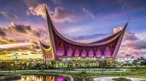
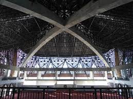

PENDAHULUAN

Masjid Raya Sumatra Barat (Jawi: مسجد راي سومترا بارت) adalah masjid raya di provinsi Sumatra Barat yang terletak di Jalan Chatib Sulaiman, Kecamatan Padang Utara, Kota Padang yang memiliki luas sekitar 4.430 meter persegi.
Diawali peletakan batu pertama pada 21 Desember 2007, pembangunannya tuntas pada 4 Januari 2019 dengan total biaya sekitar Rp325–330 miliar, sebagian besar berasal dari APBD Sumatra Barat.
Pengerjaannya dilakukan secara bertahap karena keterbatasan anggaran dari provinsi. Konstruksi masjid terdiri dari tiga lantai. Ruang utama yang dipergunakan sebagai ruang salat terletak di lantai atas, memiliki teras yang melandai ke jalan.
Denah masjid berbentuk persegi yang melancip di empat penjurunya, mengingatkan bentuk bentangan kain ketika empat kabilah suku Quraisy di Mekkah berbagi kehormatan memindahkan batu Hajar Aswad.
Bentuk sudut lancip sekaligus mewakili atap bergonjong pada rumah adat Minangkabau rumah gadang.
STRUKTUR BANGUNAN

Desain interiornya menantang komposisi eksteriornya, di mana elemen arsitektur inovatif dicampur dengan karakter arsitektur lokal untuk membentuk ikon kota yang menonjol,” tulis Abdullatif Al-Fozan Award.
Sekilas, bentuk atap masjid memang menyerupai Rumah Gadang khas masyarakat Minang.Namun bentuk atap melengkung itu ternyata menggambarkan kejadian peletakan batu Hajar Aswad dengan menggunakan kain yang ujungnya
dipegang oleh empat orang perwakilan suku di Kota Mekkah. Hal itu terjadi atas inisiatif Nabi Muhammad SAW untuk meredam konflik suku Quraisy pada zaman itu.Adapun, selain Masjid Raya Sumatera Barat, ada 6 masjid
lainnya yang menjadi pemenang desain masjid terbaik di dunia yaitu Masjid Raja Abdullah di Riyadh, Masjid Basuna di desa Basuna Sohag Mesir,.Selanjutnya Masjid Al-Ahmar di Bangladesh, Masjid Sancaklar di Buyukcekmece
Istanbul Turki, Masjid Amir Shakib Arslan di Lebanon dan Masjid Agung Djenne di Mali.
| LOKASI |
JENIS BANGUNAN |
BIAYA PEMBANGUNAN |
| PADANG |
MESJID BANGUNAN 2 LANTAI |
253 MILIYAR |
Kritik dan Saran